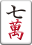
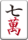
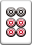
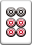

デジタル麻雀講座
講座の対象→麻雀のルール・点数まで知っている人
本講座は「デジタル麻雀の基礎」です。
レアケースやジンクスを無視してトータルで勝てる方法について解説します
本講座で基礎を学んだ後にレアケースを学んでいきましょう。
【麻雀を学ぶ時の心構え】
・技術は重要な順に身につける。
・重要でない技術は、重要な技術が身につくまで無視する。
【1ゲームの目標】
目標は「与えられた状況の中でもっとも高い順位を取る」こと
つまり運ゲーであり、決してトップを取るなどを目標にしない
全局オリてオーラスだけ突っ張ってのラスを自信を持って取れるようにする
逆にツキすぎて勝つ際も、打牌にミスがないか気をつける
【さらなる上達を目指す場合】
基本編を踏まえつつ「基本が覆る場面を探して行く」
これからどういった技術を身に付けようと、基本編の打ち方が正着であることは変わらない
なので、基礎通りに打たない局が多数を占めないように引き出しを増やして行く
ベタオリ
【ベタオリの考え方】
危険牌を探すのではなく、安全牌を探す
→ゆえに降りるときは完全に撤退し、安全な順番に切っていくのが正着
相手の手を読むという行為は行わない
【安全度表】
上に行くほど安全
現物
二枚以上見えの字牌
筋１９
一枚以上見えの字牌
中筋４５６
筋２３７８
無筋１９ 方筋４５６
無筋２３７８
無筋４５６
＊備考
ドラ ：ヤオチュー牌は２ランク、中張牌は１ランク危険
壁 ：隣は筋１９と同等、１枚離れは筋２３７８と同等
ワンチャンス ：考慮しない
<序盤捨て牌の外：１ランク安全
押し引き
押し引きは以下の３ケースに分類する
1.他家の明示的攻撃が無い状況 2.明示的な攻撃を受け、こちらがノーテン 3.明示的な攻撃を受け、こちらもテンパイ 明示的な攻撃とは「リーチ」「２副露と数回の手出し」を指すこととする
【他家の明示的攻撃が無い状況】
・押しのみを考えて打つ
基本的に安牌を抱えると行った守備を考えた打牌は行わない。
絞りと行った他家を意識した行為も行わない
ただし押すことに関係がなくなった牌は守備重視
・先制した場合は即リーチに行く
後述するが「イーシャンテンから押すことは非常に不利」
ノミ手の愚形待ちでも相手から見れば立派な先制リーチとなる
→ゆえに張ってしまえばほとんどの場合即リーが有利
【明示的な攻撃を受け、こちらがノーテン】
*引きのみを考えて打つ
シャンテンから押すという行為は非常に不利であり基本的には全て降りる


 


 



このような綺麗なシャンテンであってもテンパイには平均8巡かかる
相手が子でがドラだったとしても切りは不利
攻めても良いのは良形テンパイ受けが相当広く尚且つ打点が高い場合のみ


がドラなら切り、そうでないなら不確定三色など追わず降り
 がドラなら鳴きも使えるため押して良い
※ただしこれらもリーチ者が親なら降りるべき
がドラなら鳴きも使えるため押して良い
※ただしこれらもリーチ者が親なら降りるべき
シャンテンでさえこれなのでリャンシャンテン以前で攻める手牌はない
【明示的な攻撃を受け、こちらもテンパイ】 *待ちの良さ、打点によって押し引きを決める
押し引きの基準
決めるのは待ち、打点、相手の打点
良形なら相手の打点の半分
愚形なら相手の打点と同等
が攻めに必要な点数の概要
ここで相手の打点とはわかる範囲での平均打点を指す。
リーチであれば子7000親10000
鳴きであれば副露役+0.5役程度見積もる
自分の打点に関してはリーチの場合は+2000点程度を見積もる
安牌で追いかけられる場合は+1000点上乗せして見積もる
自分が親の場合も+1000点上乗せして見積もる
牌効率
【牌効率の基礎】
*手役を追わない
これも大事。手役を折っていいのは平和をうまく作れる人だけ
基本的に麻雀の役は
リーチ、平和、タンヤオ、役牌、七対子、トイトイ、ドラ、染め
だけで十分
*広く浅くよりも、狭く深く
選択肢があるという状態は麻雀においては思ったより強くない
染めをやるなら オタ風＞多色両面
メンツ手で七対子を見ない
両面４つよりも両面対子３つ
【序盤】
*字牌を切りとばす
役牌は「切るのに理由はいらないが残すのに理由は必要」
ターツが足りた段階で役牌は不要
切り順は「ダブ東＞＞オタ風＞役牌＞＞自風」


配牌 このくらい綺麗な手ならむしろ東→發の順に切っても良い

このような手でを残してもそれほどメリットはない
ドラ
流石にこの形なら
を先に落とす
特に牌効率がまだできていない人は数牌の優劣がわかり切っていないので、字牌を残すと数牌を持てる枚数が減ることでなおさら混乱する
なので、役がどうしても欲しいとき以外はどんどん切る
*役が欲しいときの例
オーラス上がりトップ、トイトイ、染め、ドラと端牌対子
*方針は基本的に４つ
リーチ手、対子手、速攻手、染め手
どれかに決め打った方が両天秤にかけるよりミスが少ない
 →打
→打

 →打
共にミスではあるが、迷ってを打つよりはるかに良い
→打
共にミスではあるが、迷ってを打つよりはるかに良い
【リーチ手の作り方】
*イーシャンテンの受けを最大にするように打つ
麻雀で最も成功率が低いのがイーシャンテン→テンパイ
テンパイさえすればおろし効果、罰符収入がある
そのため、とにかく先制リーチを打って行くのが基本
リャンシャンテンの受け入れよりイーシャンテンの受け入れを重視し打
テンパイ受け入れよりイーシャンテンの受け入れ→打
目指す打点は2600
満貫の天井効果故に点数効率が最も良いのが26,39(40符)
良形なら一発、裏は案外多い
これらが自然に狙える時は、無理やり打点を意識しない
ドラ1あれば打3sは「間違いではない」
これもドラ1あれば打リーチ
オーラス5000点差2位の時、ドラなし
タンヤオ、三色等はあるが、が生牌なら一発直撃、直撃裏、一発ツモ、ツモ裏の方が断然強いので即リーチ